MY KARDEK
TU FICHERO DE NOTAS
Un fichero de verdad en tu teléfono: cuatro cajones que abres y cierras, y fichas que sacas, escribes y vuelves a guardar.
Parte con una hoja de cuaderno en blanco o elige entre 48 plantillas: listas, planificadores, seguimientos con fotos, recetas, recados, cotizaciones y presupuestos. Todo se edita, todo queda en tu teléfono y funciona sin internet.
La app es gratis con cuatro plantillas: la hoja de cuaderno (líneas, cuadrícula, puntos o en blanco), No olvidar, ¿Qué estoy haciendo? y Mi semana. Las otras 44 se desbloquean con un solo pago, para siempre.
CAPTURAS
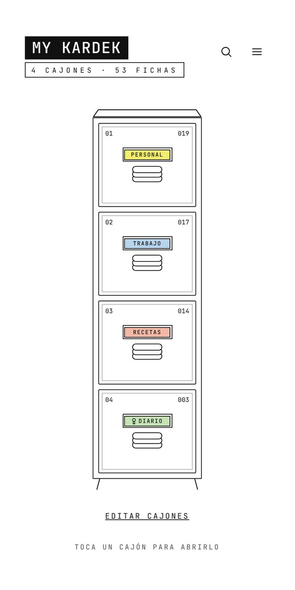
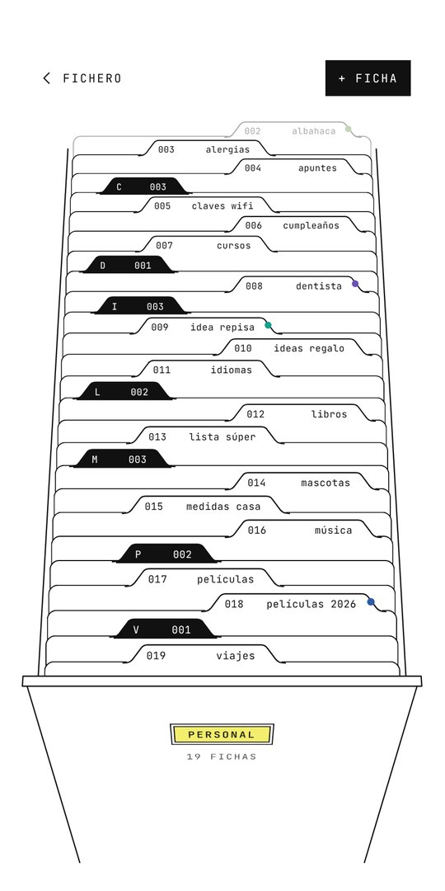
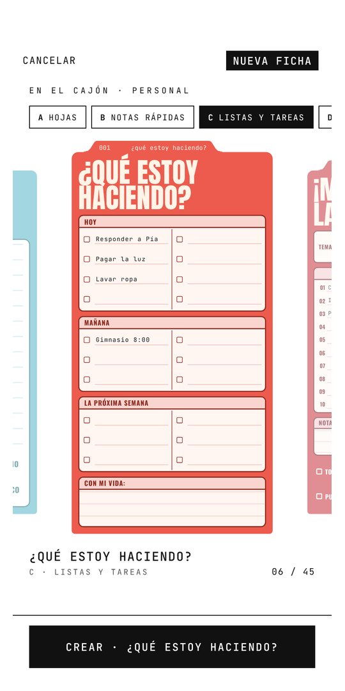
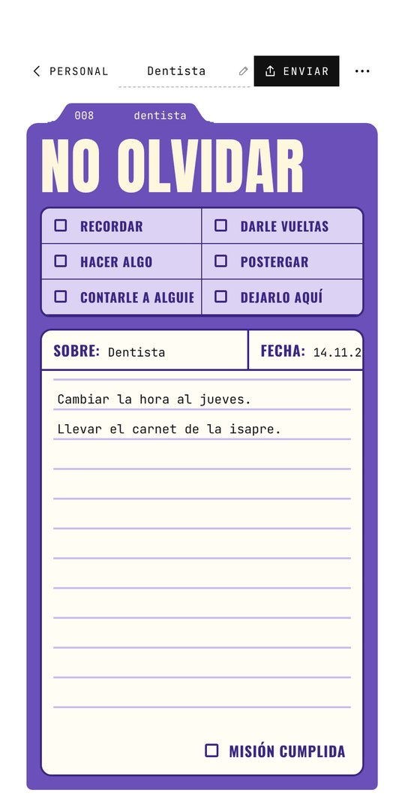
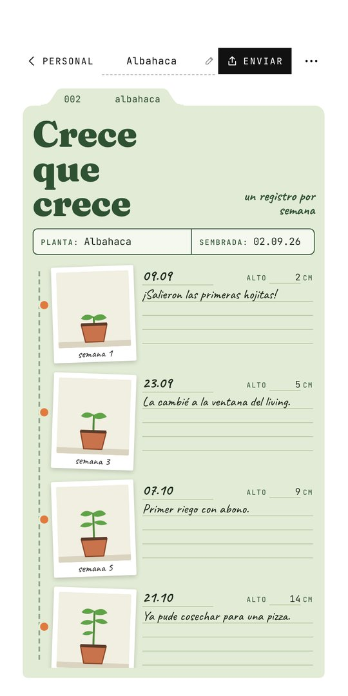
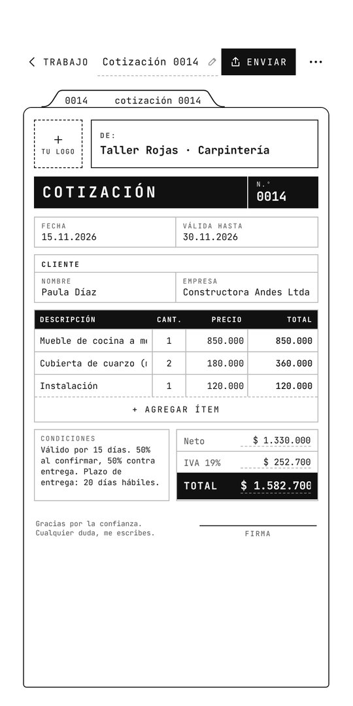
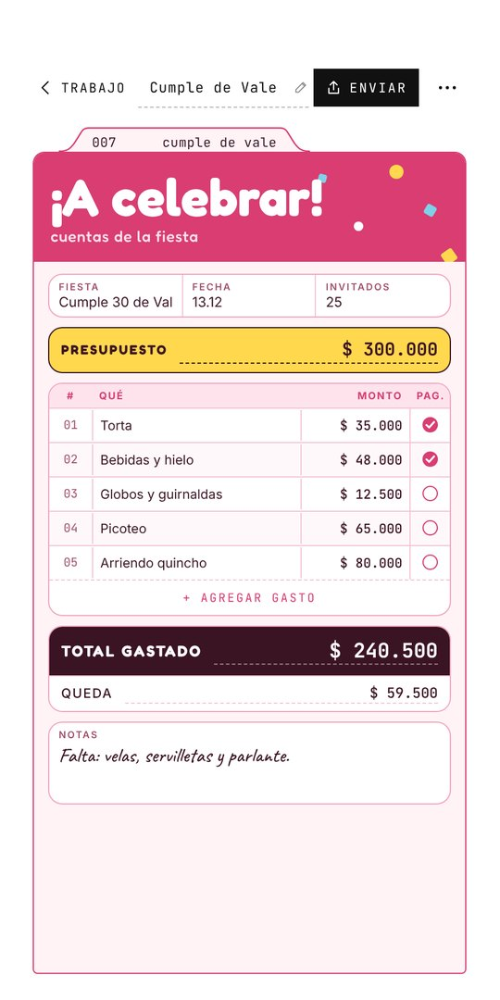
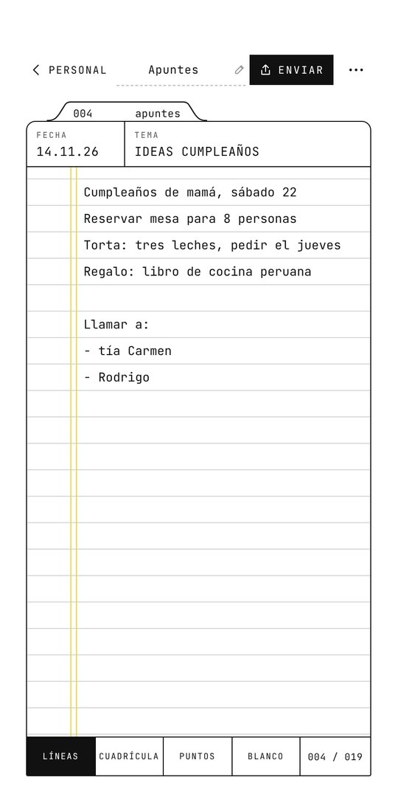
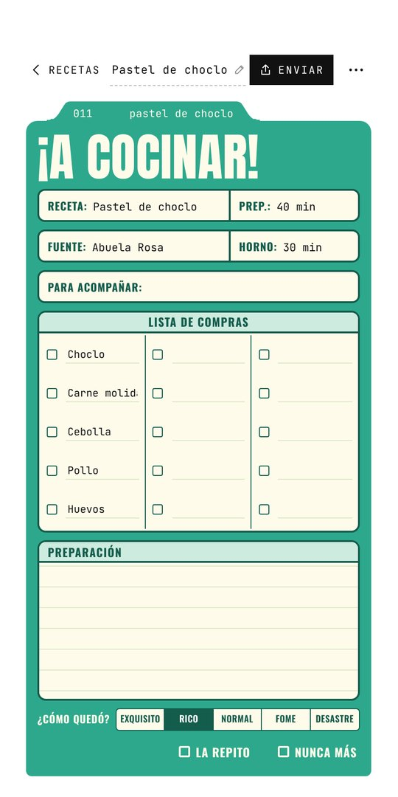
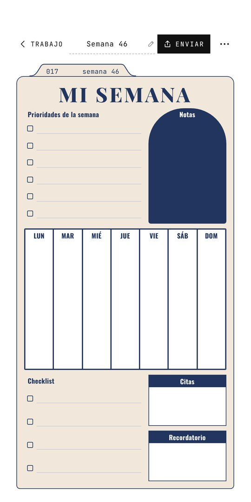
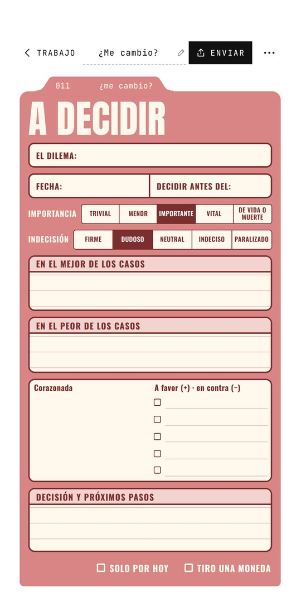
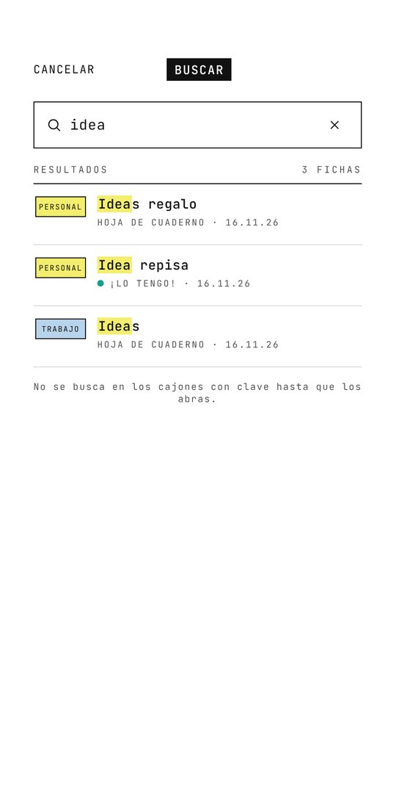
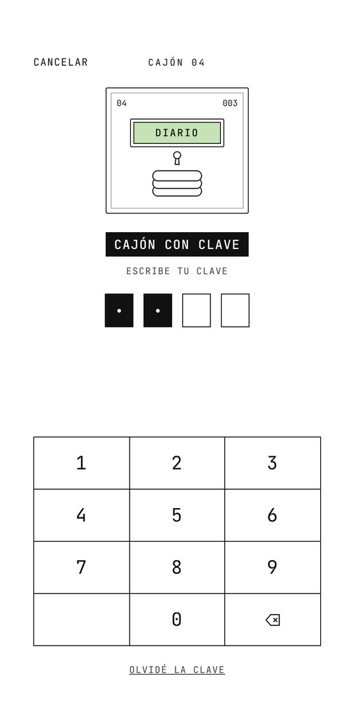
QUÉ HACE
LAS 48 PLANTILLAS
- HOJAS1
- NOTAS RÁPIDAS4
- LISTAS Y TAREAS8
- PLANIFICADORES6
- SEGUIMIENTO7
- DECISIONES3
- CÓMO ME SIENTO5
- RECADOS7
- RECETAS1
- COTIZACIONES3
- PRESUPUESTOS3
Las cotizaciones de My Kardek son un borrador rápido para mandar a un cliente: no son boleta ni factura. Ni las cotizaciones ni los presupuestos hacen cálculos: tú escribes los montos.